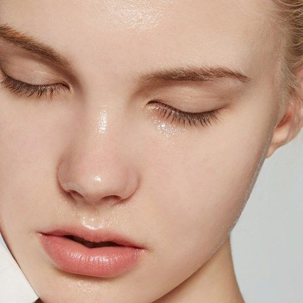

피부유형별케어
맞춤 루틴을 찾아가다.


무분별한 정보의 홍수에 대응하다
내 피부를 이해하다.
중성 피부
건성 피부
지성 피부
문제성 피부
우리의 피부는 매일 그리고 매 주마다, 매 달마다 바뀝니다. 우리가 사용하는 화장품의 종류도 매번 바뀌어야 한다는 것을 의미합니다. 수시로 바뀌는 피부를 들여다 보고, 동일한 화장품만을 계속적으로 사용하는 습관을 바꾸어 보세요.
맞춤 루틴을 찾아가다.
나만의 홈케어 레시피를 공유하다.
피부과를 가도, 뭘 해도 안 없어지던 모낭염 드디어 정복했어요!! (피부사진 첨부)
항생제와 연고는 그 때뿐이고, 내성 때문에 지속적으로 먹을 수도 없는 노릇이잖아요. 온갖 발악을 해도 안 되고 나아지려 하면 재발하길 반복해서 매일 거울 보며 울고! 1년 동안 시도한 민간요법만 해도ㅋㅋ 손세정제로 세안도 해봤답니다... 모낭염으로 고생하시는 분들 공감하죠? 좀비 같은 재발. 이런 제가 ...더보기
내돈내산, 광고 아니고 바이럴 진심 아니고
환절기만 되면 피나고 간지러울 정도로 건조한 분들 많으시죠? 저도 그 중 한 명이었는데 이번에 인생템을 찾아서 공유하려고요! 어느 정도의 루틴이 필요한데 이 제품의 효과가 가장 컸던 것 같아요 ...더보기
저렴이부터 벡화점템까지 비타민C 제품 9종 비교
햇빛이 부쩍 뜨겁고 강해진 게 느껴지는 요즘이에요. 여러분은 잡티 괜찮으신가요? 유전적으로 잡티가 많은 피부라 예방에 관심이 무척 많아서 하나 둘 모으다 보니 벌써 9가지나 모았더라구요. 여름철 대비해 알아보고 계실 분들에게 도움이 되시길 바라며^^ ...더보기
저는 답이 없다고 생각히진 않아요!
10대 후반까지 심했던 여드름을 뒤로 하고 이젠 모공과 흔적이 자리하는데요... 아무래도 모공이 제일 큰 스트레스에요. 그래서 열심히 관리하다 문득 옛날 사진을 봤는데 눈에 띄게 모공이 개선된 거에요! 홈케어로 완전히 사라진다는 것 자체가 말이 안 되기에 아직 많이 남아있지만, 제가 생각했을 때 조여줄 수 있는 방법은 확실히 있어요. ...더보기
HR@naver.com
010-000-0000
서울특별시 노원구 화랑로 621